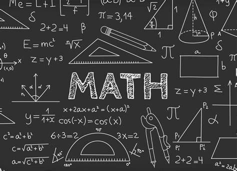

Los registros matemáticos que existen de esta civilización datan del año 5.000 a.C. y no sólo se registran operaciones matemáticas básicas, sino que los egipcios ya podían resolver ecuaciones, realizar cálculos sobre figuras geométricas, e incluso contaban con la capacidad de dibujar formas espaciales, tales como las pirámides. Esta cultura avanzó de forma considerable en el uso y aplicación de la geometría, calculando de forma muy precisa el área de triángulos, rectángulos y trapecios. A lo largo de la historia existieron varios genios de la matemática entre los más conocidos se encuentran: Pitágoras, Tales de Mileto, Isaac Newton y René Descartes.
La matemática se subdivide en diferentes ramas, que fueron apareciendo con el tiempo y se dedican a partes específicas de esta ciencia. Estas son algunas de ellas:
Aritmética: Comprende el estudio de los números. Además de los números naturales, incluye a todos los números racionales, reales y complejos.
Geometría: Comprende el estudio de las figuras y sus vínculos con el espacio.
Álgebra: Es la rama que se dedica a analizar las estructuras, realizando las operaciones aritméticas a través de letras o símbolos.
La aritmética es, entonces, la disciplina que se enfoca en las sumas, restas, multiplicaciones y divisiones que se pueden hacer entre los números existentes. Así, se trata del área más básica de las matemáticas. La aritmética se fue desarrollando con el tiempo para ampliar su campo de estudio con otras operaciones como la potenciación o la raíz cuadrada. Asimismo, pasó a operar no solo con números enteros, sino también con aquellas que tienen decimales, números negativos y, en general, números naturales. Cabe resaltar que, en ocasiones, el concepto «aritmética» es utilizado como un adjetivo. En este sentido, dando lugar a conceptos como «media aritmética«. El cual, es el resultado de sumar una serie de datos y dividir entre el número de datos.
Tipos de operaciones aritméticas
Operaciones matemáticas directas: Pudiendo distinguir estas en función de las siguientes categorías:
-Suma: Es la suma de dos, o más, números, y se puede representar de la siguiente forma: x+y+z.
-Multiplicación: Se calcula el producto de dos o más números. También se pueden entender, cuando solo hay dos cifras, como la suma de un número una determinada cantidad de veces. Se representa de la siguiente forma: A x B. Por lo que si tenemos 4x3, es como si sumáramos 4 veces el número 3 o 3 veces el número 4.
-Potenciación: Es la operación mediante la cual se multiplica un número por sí mismo una determinada cantidad de veces (n) que se indica en el superíndice. Se representa de la siguiente manera: xn. Si tenemos 52 significa que debo multiplicar el 5 por sí mismo: 5x5 = 25.
Operaciones matemáticas indirectas: Son lo opuesto a las operaciones directas, pudiendo distinguir estas en función de las siguientes categorías:
-Resta: Es la resta de un número respecto a otro u otros. Es lo contrario a la adición. Se representa de la siguiente forma: X-Y.
-División:Es lo contrario a la multiplicación. Es aquella operación matemática mediante la cual se trata de descomponer un número, al que denominaremos dividendo, en tantas partes como así lo indique otro número, al que llamaremos divisor. Se representa de la siguiente forma: X/Y. Por lo tanto, si divido 12/3, el resultado es 4. Es se debe a que si sumo cuatro veces el número 3, el resultado es 12.
-Radicación: Es lo inverso a la potenciación. La raíz cuadrada de 36, por ejemplo, es 6, porque 36 es el resultado de multiplicar 6x6. Asimismo, la raíz cúbica de 8 es 2 porque 8 es el resultado de multiplicar 2x2x2.


Cuando se habla de qué es la geometría, se habla de la rama de la matemática que se encarga de estudiar las medidas, formas y proporciones espaciales de las figuras, que se definen por una cantidad limitada de puntos, rectas y planos. Estas formas son conocidas como cuerpos geométricos. El concepto de geometría es de gran utilidad para la arquitectura, ingeniería, astronomía, física, cartografía, mecánica, balística, entre otras disciplinas.
Tipos de geometría
Los principales tipos de geometría son:
Descriptiva: Es aquella disciplina que busca representar objetos tridimensionales en un plano bidimensional.
Analítica: Es el estudio de cuerpos geométricos a través de un sistema de coordenadas. Así se puede describir cada punto en función a dos rectas perpendiculares (que al cruzarse forman un ángulo de 90º), que son los ejes x e y.
Algebraica: Es aquella rama de las matemáticas que aplica el álgebra a la geometría para la resolución de ciertos cálculos.
Proyectiva: Es la rama de la geometría que estudia cómo ilustrar figuras en un entorno plano bidimensional.
Del espacio: Se enfoca en el estudio de las figuras tridimensionales (con ancho, largo y altura, por ejemplo).


Se conoce como álgebra a la rama de la matemática en la cual las operaciones son generalizadas empleando números, letras y signos que representan simbólicamente un número u otra entidad matemática. Según Baldor, álgebra es la rama de la matemática que estudia la cantidad considerada del modo más general posible. En este sentido, se puede reseñar que la enseñanza del álgebra está dominada por la obra “Álgebra de Baldor”, libro del matemático cubano Aurelio Baldor, que desarrolla y trata de todas las hipótesis de esta ciencia.
El término algebraico es una expresión simple donde se combinan letras y números, y no se suman o restan las variables. Por ejemplo: -5x3
En el anterior término algebraico podemos identificar sus partes:
-Signo: Puede ser positivo o negativo, como en el ejemplo.
-Coeficiente: El número que acompaña a la variable, que en este caso sería el 5.
-Variable: Es la incógnita representada por la letra x.
-Exponente: El potencia a la que esté elevada la variables, que en el ejemplo sería 3. Si no aparece ningún exponente se sobreentiende que es 1.
La expresión algebraica es un conjunto de variables y números que pueden combinarse con distintas operaciones matemática, incluso sumas y restas, a diferencia de los términos algebraicos. Un ejemplo puede ser el siguiente: -5x3+6y
Las expresiones pueden expresarse en función al número de términos que las contienen como:
Monomio: Tiene un término: 15z
Binomio: Posee dos término: 2x2-7y
Trinomio: Tiene tres términos: 3x2+8y+2z
Polinomio: Cuenta con más de tres términos: 5x2-3y+6z-9
Una ecuación es la asociación entre dos expresiones algebraicas a través del signo de igualdad. Pueden ser principalmente de dos tipos:
-Ecuación de primer grado: Cuando la variable está elevada máximo a la potencia 1. Se le conoce como ecuación.
5x+5y=9
-Ecuación de segundo grado: Cuando la variable está elevada máximo a la potencia 2. También se le denomina ecuación cuadrática.
5x2-3y+6z-9=3x